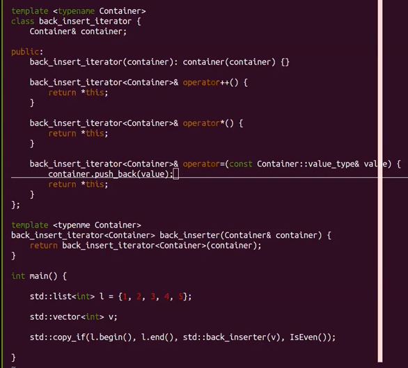
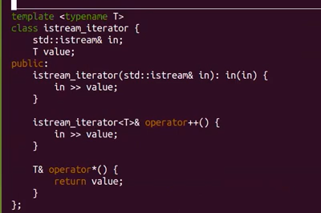

2023
Это штука, которая ведет себя как итератор.
Что такое вести себя как итератор?
Это значит позволять себя:
#include <iostream>
#include <vector>
int main() {
std::vector<int> v = {1, 2, 3, 4, 5};
std::vector<int>::iterator it = v.begin(); // итератор
std::cout << *it << "\n"; // разыменование
++it; // инкремент
std::cout << *it << "\n";
// v.end() - метод, который есть у всех контейнеров
// это указатель на память сразу за контейнером
// поэтому разыменование v.end() - это UB
for (std::vector<int>::iterator it = v.begin(); it != v.end(); ++it) {
std::cout << *it << "\n";
}
for (int x: v) { // этот синтаксис делает тоже самое, что выше
std::cout << x << "\n";
}
// и если реализовать контейнер, у которого будут методы begin и end
// и итератор
// то по нему можно будет ходить в таком цикле
//std::cout << *v.end() << "\n"; // неопределенное поведение
}InputIterator - позволяет пройтись только один раз. Как std::istream.
Операции:
++ForwardIterator - можно идти только вперед. 1 Как
std::forward_list, std::unordered_map/set.
Операции:
++BidirectionalIterator - можно идти в две стороны. 2 Как
std::list, std::map, std::set.
Операции:
++--RandomAccessIterator - можно «все что угодно». Как std::vector.
Операции:
++--+= n-= nit1 - it2it1 > it2std::advance и std::distancestd::advance - продвигает итератор на нужное
количество шагов.
#include <iostream>
#include <vector>
int main() {
std::vector<int> v = {1, 2, 3, 4, 5};
std::vector<int>::iterator it = v.begin();
std::cout << *it << "\n";
std::advance(it, 3);
std::cout << *it << "\n";
std::vector<int>::iterator it_ = v.end();
std::cout << "distance between iters: " << std::distance(it, it_) << "\n";
}std::advanceКак реализовать advance так, чтобы она
работала по-разному в зависимости от категории итератора?
std::iterator_traits - структура с кучей полей,
которая позволяет в числе прочего узнать категорию итератора.
#include <iostream>
#include <iterator>
template <typename Iterator>
void advance_(const Iterator& it, int n) {
if (std::is_same_v<typename std::iterator_traits<Iterator>::iterator_category, typename std::random_access_iterator_tag) {
it += n; // но так работать не будет
// потому что компилятор не может добавить n к любому типу
} else {
for (int i = 1; i <= n; ++i; ++it);
}
}
int main() {
}Есть два варианта решения:
constexpr. Компилятор не
компилирует булево выражение, помеченное constexpr, если оно не выполнено. 3#include <iostream>
#include <iterator>
#include <vector>
#include <type_traits>
#include <list>
template <typename Iterator>
void advance_(Iterator& it, int n) {
if constexpr (std::is_same_v<
typename std::iterator_traits<Iterator>::iterator_category,
typename std::random_access_iterator_tag
>) {
std::cout << "random access iterator\n";
it += n;
}
else {
for (int i = 1; i <= n; ++i, ++it);
std::cout << "no random access iterator\n";
}
}
int main() {
std::vector<int> v = {1, 2, 3, 4, 5};
std::vector<int>::iterator it = v.begin();
std::cout << *it << "\n";
advance_(it, 3);
std::cout << *it << "\n";
std::list<int> li = {1, 2, 3, 4, 5};
std::list<int>::iterator it_ = li.begin();
std::cout << *it_ << "\n";
advance_(it_, 3);
std::cout << *it_ << "\n";
}#include <iostream>
#include <iterator>
#include <vector>
#include <type_traits>
#include <list>
template <typename Iterator, typename IteratorCategory>
void advance__helper(Iterator& it,
int n,
IteratorCategory) {
for (int i = 1; i <= n; ++i, ++it);
std::cout << "no random access iterator\n";
}
template <typename Iterator>
void advance__helper(Iterator& it,
int n,
std::random_access_iterator_tag) {
std::cout << "random access iterator\n";
it += n;
}
template <typename Iterator>
void advance_(Iterator& it, int n) {
advance__helper(it, n, typename std::iterator_traits<Iterator>::iterator_category());
}
int main() {
std::vector<int> v = {1, 2, 3, 4, 5};
std::vector<int>::iterator it = v.begin();
std::cout << *it << "\n";
advance_(it, 3);
std::cout << *it << "\n";
std::list<int> li = {1, 2, 3, 4, 5};
std::list<int>::iterator it_ = li.begin();
std::cout << *it_ << "\n";
advance_(it_, 3);
std::cout << *it_ << "\n";
}const итераторы#include <iostream>
#include <iterator>
#include <vector>
#include <type_traits>
#include <list>
int main() {
std::vector<int> v = {1, 2, 3, 4, 5};
std::vector<int>::iterator it = v.begin();
*it = 4; // можно присваивать
std::cout << v[0] << "\n";
std::vector<int>::const_iterator it_ = v.cbegin(); // константный итератор
//*it_ = 4; // ошибка: нельзя присваивать по константному итератору
std::cout << v[0] << "\n";
}Функция begin(), в зависимости от того
константный ли контейнер, возвращает константный либо не константный
итератор.
#include <iostream>
#include <iterator>
#include <type_traits>
using std::initializer_list;
template <bool Cond, typename T, typename T_>
struct conditional {
using type = T_;
};
template <typename T, typename T_>
struct conditional<true, T, T_> {
using type = T;
};
template <bool Cond, typename T, typename T_>
using conditional_t = typename conditional<Cond, T, T_>::type;
template <typename T>
class Vector {
private:
size_t capacity = 0;
T* arr;
public:
Vector(size_t capacity): capacity(capacity), arr(new T[capacity]) {}
Vector(initializer_list<T> lst): capacity(lst.size()), arr(new T[capacity]) {
std::copy(lst.begin(), lst.end(), arr);
}
~Vector() {
delete[] arr;
}
void swap(Vector& v) {
std::swap(v.capacity, capacity);
std::swap(v.arr, arr);
}
Vector& operator=(Vector v) {
swap(v);
return *this;
}
template <bool IsConst>
class common_iterator {
private:
conditional_t<IsConst, const T*, T*> ptr;
public:
common_iterator(T* ptr): ptr(ptr) {}
conditional_t<IsConst, const T&, T&> operator*() {
return *ptr;
}
common_iterator& operator++() {
++ptr;
return *this;
}
};
using iterator = common_iterator<false>;
using const_iterator = common_iterator<true>;
iterator begin() const {
return iterator(arr);
}
iterator end() const {
return iterator(arr + capacity);
}
void print() {
for (size_t i = 0; i < capacity; ++i) {
std::cout << arr[i] << " ";
}
std::cout << "\n";
}
};
int main() {
Vector<int> v = {1, 2, 3, 4, 5};
Vector<int>::iterator it = v.begin();
v.print();
*it = 6;
v.print();
}reverse
итераторы#include <iostream>
#include <vector>
// в библиотеке итератор есть структура reverse_iterator,
// которая от произвольного итератора создает итератор,
// делающий все наоборот
// вместо ++ --
// вместо += -=
// методы rbegin и rend есть у контейнеров и возвращают
// итератор на последний элемент и итератор на элемент перед первым
int main() {
std::vector<int> v = {1, 2, 3, 4, 5};
// auto ~ std::vector<int>::reverse_iterator
for (auto it = v.rbegin(); it != v.rend(); ++it) {
std::cout << *it << "\n";
}
}output итераторыЯ это напишу, ну, наверное.

stream итераторы 4#include <iostream>
#include <vector>
#include <iterator>
int main() {
std::istream_iterator<int> it(std::cin);
std::vector<int> v;
for (int i = 0; i < 10; ++i, ++it) {
v.push_back(*it);
}
for (int x: v) { std::cout << x << "\n"; }
}std::ifstream = if('filename.txt') - поток
по файлу.std::istringstream = iss(std::string("abra")) - поток
по строке
#include <iostream>
#include <vector>
#include <iterator>
int main() {
std::vector<int> v = {1, 2, 3, 4, 5};
std::cout << "[ ";
std::copy(v.begin(), v.end(), std::ostream_iterator<int>(std::cout, " ]\n[ "));
}